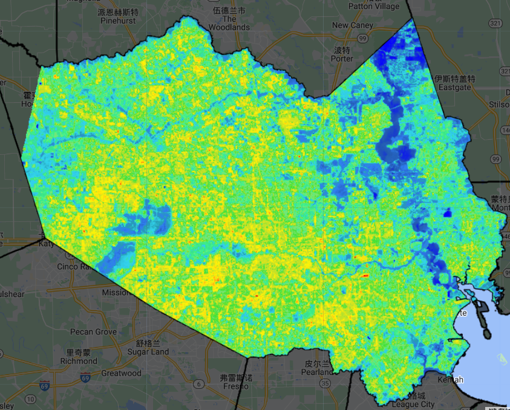
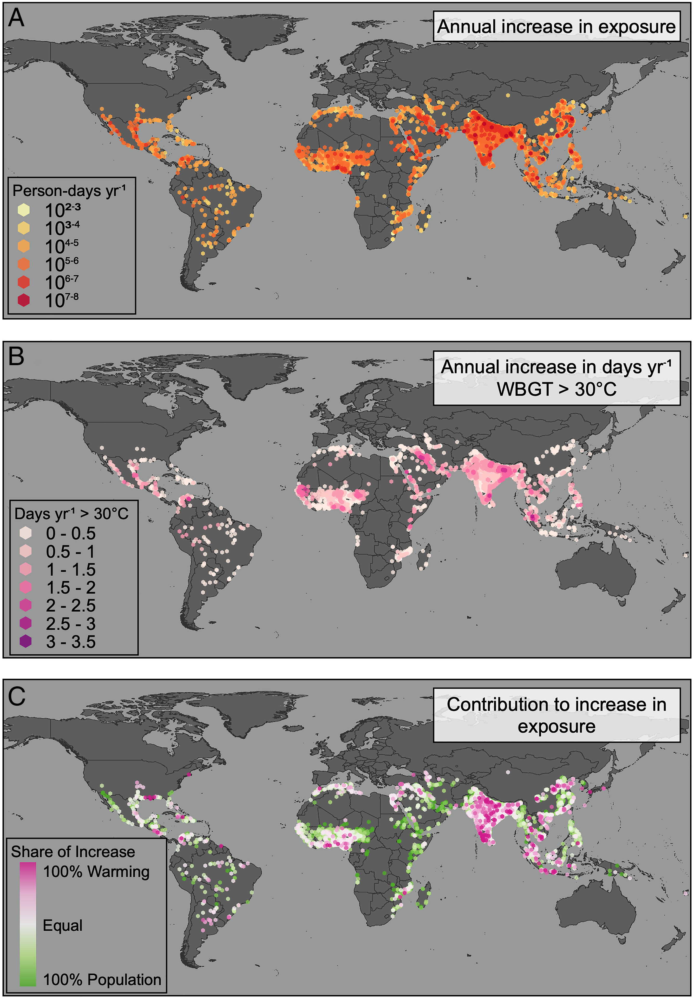

8 Week8: Temperature
8.1 Summary
8.1.1 Urban Heat Island problem
8.1.1.1 Definition
Urban heat island is a city that is much warmer than its surrounding rural areas because of human activities. The temperature difference can be up to 7°F during the daytime
Example of London: in this graph, it can be seen that the closer to the city center the hotter the area is, as there are more sources of heat and the temperature decreases from the center to the periphery, a typical heat island effect.
8.1.1.2 Hazards of UHI
Affected population: from the investigation within 13,115 cities from 1983 to 2016, urban exposure increased nearly 200%, affecting 1.7 billion people.
Economic loss: In Melbourne, for example, if the heat island effect is not controlled, the city’s economic losses will increase every year, and this increase is mainly in terms of the impact on human health and energy use, with the heat island effect threatening health and therefore necessitating greater investment in healthcare resources, and energy consumption mainly in terms of cooling
Environment impact: urban heat island (UHI) raises electricity demand during summer. As a result, power plants have to supply the needed extra energy, and since they rely on fossil fuel for energy production, there is an increase in greenhouse gas emissions and air pollutants. The main greenhouse gases and pollutants include carbon monoxide (CO), carbon dioxide (CO2), sulfur dioxide (SO2), nitrogen oxides (NOx), particulate matter and Mercury (Hg). Increased greenhouse gases cause global warming and climate change.
8.1.1.3 Policies
- Global
New Urban Agenda = standards and principles for planning, construction, development, management and urban improvement
- Point 54
We commit ourselves to the generation and use of renewable and affordable energy and sustainable and efficient transport infrastructure and services, where possible, achieving the benefits of connectivity and reducing the financial, environmental and public health costs of inefficient mobility, congestion, air pollution, urban heat island effects and noise.
- Point 79
We commit ourselves to promoting international, national, subnational and local climate action, including climate change adaptation and mitigation, and to supporting the efforts of cities and human settlements, their inhabitants and all local stakeholders as important implementers.
- Point 37
We commit ourselves to promoting safe, inclusive, accessible, green and quality public spaces, including streets, sidewalks and cycling lanes, squares, waterfront areas, gardens and parks, that are multifunctional areas for social interaction and inclusion, human health and well-being
- local
- Singapore
Introduce more efficient physical infrastructure, such as district-level cooling that efficiently uses energy to mechanically cool large areas in cities
Nature-based solutions, such as increasing the extent and density of green spaces in cities and on walls and roofs, and;
Integrated, inclusive planning of urban stakeholders to ensure that vulnerable urban residents are protected
use substituted cooling solution, propane as a refrigerant could lessen the global temperature increase from space cooling, meaning that we could avoid a 0.09°C increase in global temperature by the end of the century, making a significant contribution toward keeping the global temperature rise below 1.5 °C.
- Medellín’s interconnected green corridors
Since 2016, Medellín has created 30 ‘Corredores Verdes,’ an interconnected network of greenery across the city, it demonstrates how integrated, nature-based policies like widespread urban tree planting can have a far-reaching impact on the local and global environment, as well as significantly improving citizens’ lives and well-being.
- Cooling Cities with Zoning in Cambridge, Massachusetts
At the city level, cities are continuing early work described in Scorched to develop heat-informed zoning policies. Cambridge estimated the temperature-reduction effects of various cooling strategies—such as preserving mature trees and using light-colored paving and building materials—and drafted a site scoring system that is now being piloted at four sites.
8.1.2 Application in GEE
To analyze the temperature distribution and urban heat island effect, I use Houston city, USA as an example

It is shown in this picture, the center area of Houston has higher temperature, and Low temperature appears from north-east part south-east part of Houston, this part is mountain and sea, west area seems to be hotter than east area.
The highest temperature in summer appears around 20 June, and the lowest temperature appears in 15-20 September, average temperature in summer is higher than 30 degree.
8.2 Applicaion
- Case 1: socioeconomic drivers of urban heat island effect
Li et al. (2020) tried to measure the magnitudes and marginal effect of socioeconomic drivers on UHI dynamics in major Chinese cities. Generalized additive model (GAM) sre used for modelling non-linear/linear relations between economic output, population, industrial structure, geographical features and UHI at seasonal and climate-zones level.
The result shows that socioeconomic factors explain 12 %∼20 % of UHI intensity variations. Urban economic scale generally has a higher contribution rate than variables of population and industrial structure. Urban economic growth raised the heat stress in hot summer. Moreover, a negative linear nexus was observed between the UHI intensity and per capital GDP, indicating that the empirical results supported a post-environmental Kuznets curve (EKC) relationship during the sample period.
Variables selected according to this correlation coefficient matrix
generalized additive model expression formula:
The result shows the annual UHII increased rapidly until 2010 and remained stable after 2010. Significant seasonal variations in UHII were also observed during the study period. The mean LST was greater in summer than in winter for both urban and rural differences. In summer, mean UHII initially increases and then decreases after 2010. The winter response curve showed a U-shaped trajectory.
This is an application of generalized additive model in different seasons, the solid black line indicates the trend in UHII with the year of observation, and the shaded area centered on the solid line indicates the lower and upper limits of UHII.
- Case 2: global urban population exposure to extreme heat
Tuholske et al. (2021) examines how urbanization affects the exposure of human populations to extreme heat events. They use satellite data and climate models to estimate the urban heat island (UHI) effect and the population density for 1692 cities around the world. They find that urbanization increases both the frequency and intensity of extreme heat events, especially in tropical regions. Based on this, they predict that by 2050, more than 1.6 billion people in urban areas will experience at least 20 days per year with a maximum temperature above 35 °C, which is a fourfold increase from 2000. Therefore, they suggest that urban planning and design strategies can help mitigate the UHI effect and reduce the risk of heat-related mortality and morbidity.
They found a linear relationship between overall population growth and the increase in the urban heat island effect over the years, which has led to an increasing number of people being exposed to the adverse effects of the heat island effect.
This is a global map of the increase in the number of people at risk from the heat island effect, which shows that the number of people affected per day is significant in western Africa near the equator, eastern Africa, all of India and southeastern China, Southeast Asia, Central America and the Middle East, and also shows that the heat island effect is increasing significantly in these areas.

The following regions are typical of the major population growth areas of recent times, the most significant cause of temperature growth in South Asia and Saharan Africa is population growth and consequently, heat island effect, and a relatively small share of global warming, typical city is Kolkata in India. West Asia and the Latin American Caribbean are evenly divided, but population growth is an important factor that cannot be ignored.
8.3 Reflection
The urban heat island effect is a key concern for city managers at the moment, and it can be seen that many cities have introduced policies to combat the heat island effect and reduce urban temperatures.
The point that I am more interested in is how to do a temperature simulation of a city using the SOLWEIG model and collect the input values needed for this model. This link (https://umep-docs.readthedocs.io/projects/tutorial/en/latest/Tutorials/IntroductionToSolweig.html) is an introduction to the model and its applications, which I would like to explore outside of this course, not only for my future projects of the same type, but also to enhance my coding and graphical skills.